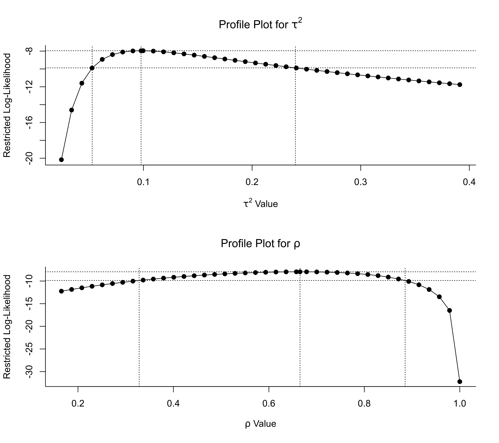

confint.rma.RdThe function computes confidence intervals for the model coefficients and/or other parameters in the model.
# S3 method for rma.uni
confint(object, parm, level, fixed=FALSE, random=TRUE, type,
digits, transf, targs, verbose=FALSE, control, ...)
# S3 method for rma.mh
confint(object, parm, level, digits, transf, targs, ...)
# S3 method for rma.peto
confint(object, parm, level, digits, transf, targs, ...)
# S3 method for rma.glmm
confint(object, parm, level, digits, transf, targs, ...)
# S3 method for rma.mv
confint(object, parm, level, fixed=FALSE, sigma2, tau2, rho, gamma2, phi,
digits, transf, targs, verbose=FALSE, control, ...)
# S3 method for rma.uni.selmodel
confint(object, parm, level, fixed=FALSE, tau2, delta,
digits, transf, targs, verbose=FALSE, control, ...)
# S3 method for rma.ls
confint(object, parm, level, fixed=FALSE, alpha,
digits, transf, targs, verbose=FALSE, control, ...)an object of class "rma.uni", "rma.mh", "rma.peto", "rma.mv", "rma.uni.selmodel", or "rma.ls". The method is not yet implemented for objects of class "rma.glmm".
this argument is here for compatibility with the generic function confint, but is (currently) ignored.
logical to specify whether confidence intervals for the model coefficients should be returned.
logical to specify whether a confidence interval for the amount of (residual) heterogeneity should be returned.
optional character string to specify the method to use for computing the confidence interval for the amount of (residual) heterogeneity (either "QP", "GENQ", or "PL").
integer to specify for which \(\sigma^2\) parameter a confidence interval should be obtained.
integer to specify for which \(\tau^2\) parameter a confidence interval should be obtained.
integer to specify for which \(\rho\) parameter the confidence interval should be obtained.
integer to specify for which \(\gamma^2\) parameter a confidence interval should be obtained.
integer to specify for which \(\phi\) parameter a confidence interval should be obtained.
integer to specify for which \(\delta\) parameter a confidence interval should be obtained.
integer to specify for which \(\alpha\) parameter a confidence interval should be obtained.
numeric value between 0 and 100 to specify the confidence interval level. If unspecified, the default is to take the value from the object.
optional integer to specify the number of decimal places to which the results should be rounded. If unspecified, the default is to take the value from the object.
optional argument to specify a function to transform the model coefficients and interval bounds (e.g., transf=exp; see also transf). If unspecified, no transformation is used.
optional arguments needed by the function specified under transf.
logical to specify whether output should be generated on the progress of the iterative algorithms used to obtain the confidence intervals (the default is FALSE). See ‘Details’.
list of control values for the iterative algorithms. If unspecified, default values are defined inside the function. See ‘Note’.
other arguments.
Confidence intervals for the model coefficients can be obtained by setting fixed=TRUE and are simply the usual Wald-type intervals (which are also shown when printing the fitted object).
Other parameter(s) for which confidence intervals can be obtained depend on the model object:
For objects of class "rma.uni" obtained with the rma.uni function, a confidence interval for the amount of (residual) heterogeneity (i.e., \(\tau^2\)) can be obtained by setting random=TRUE (which is the default). The interval is obtained iteratively either via the Q-profile method or via the generalized Q-statistic method (Hartung and Knapp, 2005; Viechtbauer, 2007; Jackson, 2013; Jackson et al., 2014). The latter is automatically used when the model was fitted with method="GENQ" or method="GENQM", the former is used in all other cases. Either method provides an exact confidence interval for \(\tau^2\) in random- and mixed-effects models. The square root of the interval bounds is also returned for easier interpretation. Confidence intervals for \(I^2\) and \(H^2\) are also provided (Higgins & Thompson, 2002). Since \(I^2\) and \(H^2\) are just monotonic transformations of \(\tau^2\) (for details, see print), the confidence intervals for \(I^2\) and \(H^2\) are also exact. One can also set type="PL" to obtain a profile likelihood confidence interval for \(\tau^2\) (and corresponding CIs for \(I^2\) and \(H^2\)), which would be more consistent with the use of ML/REML estimation, but is not exact (see ‘Note’).
For objects of class "rma.mv" obtained with the rma.mv function, confidence intervals are obtained by default for all (non-fixed) variance and correlation components of the model. Alternatively, one can use the sigma2, tau2, rho, gamma2, or phi arguments to specify for which variance/correlation parameter a confidence interval should be obtained. Only one of these arguments can be used at a time. A single integer is used to specify the number of the parameter. The function provides profile likelihood confidence intervals for these parameters. It is a good idea to examine the corresponding profile likelihood plots (via the profile function) to make sure that the bounds obtained are sensible.
For selection model objects of class "rma.uni.selmodel" obtained with the selmodel function, confidence intervals are obtained by default for \(\tau^2\) (for models where this is an estimated parameter) and all (non-fixed) selection model parameters. Alternatively, one can choose to obtain a confidence interval only for \(\tau^2\) by setting tau2=TRUE or for one of the selection model parameters by specifying its number via the delta argument. The function provides profile likelihood confidence intervals for these parameters. It is a good idea to examine the corresponding profile likelihood plots (via the profile function) to make sure that the bounds obtained are sensible.
For location-scale model objects of class "rma.ls" obtained with the rma.uni function, confidence intervals are obtained by default for all (non-fixed) scale parameters. Alternatively, one can choose to obtain a confidence interval for one of the scale parameters by specifying its number via the alpha argument. The function provides profile likelihood confidence intervals for these parameters. It is a good idea to examine the corresponding profile likelihood plots (via the profile function) to make sure that the bounds obtained are sensible.
The methods used to find confidence intervals for these parameters are iterative and require the use of the uniroot function. By default, the desired accuracy (tol) is set equal to .Machine$double.eps^0.25 and the maximum number of iterations (maxiter) to 1000. These values can be adjusted with control=list(tol=value, maxiter=value), but the defaults should be adequate for most purposes. If verbose=TRUE, output is generated on the progress of the iterative algorithms. This is especially useful when model fitting is slow, in which case finding the confidence interval bounds can also take considerable amounts of time.
When using the uniroot function, one must also set appropriate end points of the interval to be searched for the confidence interval bounds. The function tries to set some sensible defaults for the end points, but it may happen that the function is only able to determine that a bound is below/above a certain limit (this is indicated in the output accordingly with < or > signs). It can also happen that the model cannot be fitted or does not converge especially at the extremes of the interval to be searched. This will result in missing (NA) bounds and corresponding warnings. It may then be necessary to adjust the end points manually (see ‘Note’).
Finally, it is also possible that the lower and upper confidence interval bounds for a variance component both fall below zero. Since both bounds then fall outside of the parameter space, the confidence interval then consists of the null/empty set. Alternatively, one could interpret this as a confidence interval with bounds \([0,0]\) or as indicating ‘highly/overly homogeneous’ data.
An object of class "confint.rma". The object is a list with either one or two elements (named fixed and random) with the following elements:
estimate of the model coefficient, variance/correlation component, or selection model parameter.
lower bound of the confidence interval.
upper bound of the confidence interval.
When obtaining confidence intervals for multiple components, the object is a list of class "list.confint.rma", where each element is a "confint.rma" object as described above.
The results are formatted and printed with the print function.
When computing a CI for \(\tau^2\) for objects of class "rma.uni", the estimate of \(\tau^2\) will usually fall within the CI bounds provided by the Q-profile method. However, this is not guaranteed. Depending on the method used to estimate \(\tau^2\) and the width of the CI, it can happen that the CI does not actually contain the estimate. Using the empirical Bayes or Paule-Mandel estimator of \(\tau^2\) when fitting the model (i.e., using method="EB" or method="PM") usually ensures that the estimate of \(\tau^2\) falls within the CI (for method="PMM", this is guaranteed). When method="GENQ" was used to fit the model, the corresponding CI obtained via the generalized Q-statistic method also usually contains the estimate \(\tau^2\) (for method="GENQM", this is guaranteed). When using ML/REML estimation, the profile likelihood CI (obtained when setting type="PL") is guaranteed to contain the estimate of \(\tau^2\).
When computing a CI for \(\tau^2\) for objects of class "rma.uni", the end points of the interval to be searched for the CI bounds are \([0,100]\) (or, for the upper bound, ten times the estimate of \(\tau^2\), whichever is greater). The upper bound should be large enough for most cases, but can be adjusted with control=list(tau2.max=value). One can also adjust the lower end point with control=list(tau2.min=value). You should only play around with this value if you know what you are doing.
For objects of class "rma.mv", the function provides profile likelihood CIs for the variance/correlation parameters in the model. For variance components, the lower end point of the interval to be searched is set to 0 and the upper end point to the larger of 10 and 100 times the value of the component. For correlations, the function tries to set the lower end point to a sensible default depending on the type of variance structure chosen, while the upper end point is set to 1. One can adjust the lower and/or upper end points with control=list(vc.min=value, vc.max=value). Also, the function tries to adjust the lower/upper end points when the model does not converge at these extremes (the end points are then moved closer to the estimated value of the component). The total number of tries for setting/adjusting the end points in this manner is determined via control=list(eptries=value), with the default being 10 tries.
For objects of class "rma.uni.selmodel" or "rma.ls", the function also sets some sensible defaults for the end points of the interval to be searched for the CI bounds (of the \(\tau^2\), \(\delta\), and \(\alpha\) parameter(s)). One can again adjust the end points and the number of retries (as described above) with control=list(vc.min=value, vc.max=value, eptries=value).
The Q-profile and generalized Q-statistic methods are both exact under the assumptions of the random- and mixed-effects models (i.e., normally distributed observed and true effect sizes or outcomes and known sampling variances). In practice, these assumptions are usually only approximately true, turning CIs for \(\tau^2\) also into approximations. Profile likelihood CIs are not exact by construction and rely on the asymptotic behavior of the likelihood ratio statistic, so they may be inaccurate in small samples, but they are inherently consistent with the use of ML/REML estimation.
Hardy, R. J., & Thompson, S. G. (1996). A likelihood approach to meta-analysis with random effects. Statistics in Medicine, 15(6), 619–629. https://doi.org/10.1002/(sici)1097-0258(19960330)15:6%3C619::aid-sim188%3E3.0.co;2-a
Hartung, J., & Knapp, G. (2005). On confidence intervals for the among-group variance in the one-way random effects model with unequal error variances. Journal of Statistical Planning and Inference, 127(1-2), 157–177. https://doi.org/10.1016/j.jspi.2003.09.032
Higgins, J. P. T., & Thompson, S. G. (2002). Quantifying heterogeneity in a meta-analysis. Statistics in Medicine, 21(11), 1539–1558. https://doi.org/10.1002/sim.1186
Jackson, D. (2013). Confidence intervals for the between-study variance in random effects meta-analysis using generalised Cochran heterogeneity statistics. Research Synthesis Methods, 4(3), 220–229. https://doi.org/10.1186/s12874-016-0219-y
Jackson, D., Turner, R., Rhodes, K., & Viechtbauer, W. (2014). Methods for calculating confidence and credible intervals for the residual between-study variance in random effects meta-regression models. BMC Medical Research Methodology, 14, 103. https://doi.org/10.1186/1471-2288-14-103
Viechtbauer, W. (2007). Confidence intervals for the amount of heterogeneity in meta-analysis. Statistics in Medicine, 26(1), 37–52. https://doi.org/10.1002/sim.2514
Viechtbauer, W. (2010). Conducting meta-analyses in R with the metafor package. Journal of Statistical Software, 36(3), 1–48. https://doi.org/10.18637/jss.v036.i03
rma.uni, rma.mh, rma.peto, rma.glmm, rma.mv, and selmodel.rma.uni for functions to fit models for which confidence intervals can be computed.
profile.rma.uni, profile.rma.mv, and profile.rma.uni.selmodel for functions to create profile likelihood plots corresponding to profile likelihood confidence intervals.
### calculate log risk ratios and corresponding sampling variances
dat <- escalc(measure="RR", ai=tpos, bi=tneg, ci=cpos, di=cneg, data=dat.bcg)
### meta-analysis of the log risk ratios using a random-effects model
res <- rma(yi, vi, data=dat, method="REML")
### confidence interval for the total amount of heterogeneity
confint(res)
#>
#> estimate ci.lb ci.ub
#> tau^2 0.3132 0.1197 1.1115
#> tau 0.5597 0.3460 1.0543
#> I^2(%) 92.2214 81.9177 97.6781
#> H^2 12.8558 5.5303 43.0680
#>
### mixed-effects model with absolute latitude in the model
res <- rma(yi, vi, mods = ~ ablat, data=dat)
### confidence interval for the residual amount of heterogeneity
confint(res)
#>
#> estimate ci.lb ci.ub
#> tau^2 0.0764 0.0167 0.7849
#> tau 0.2763 0.1292 0.8859
#> I^2(%) 68.3931 32.1080 95.6976
#> H^2 3.1639 1.4729 23.2428
#>
### multilevel random-effects model
res <- rma.mv(yi, vi, random = ~ 1 | district/school, data=dat.konstantopoulos2011)
### profile plots and confidence intervals for the variance components
# \dontrun{
par(mfrow=c(2,1))
profile(res, sigma2=1, steps=40, cline=TRUE)
sav <- confint(res, sigma2=1)
sav
#>
#> estimate ci.lb ci.ub
#> sigma^2.1 0.0651 0.0222 0.2072
#> sigma.1 0.2551 0.1491 0.4552
#>
abline(v=sav$random[1,2:3], lty="dotted")
profile(res, sigma2=2, steps=40, cline=TRUE)
sav <- confint(res, sigma2=2)
sav
#>
#> estimate ci.lb ci.ub
#> sigma^2.2 0.0327 0.0163 0.0628
#> sigma.2 0.1809 0.1276 0.2507
#>
abline(v=sav$random[1,2:3], lty="dotted")
# }
### multivariate parameterization of the model
res <- rma.mv(yi, vi, random = ~ school | district, data=dat.konstantopoulos2011)
### profile plots and confidence intervals for the variance component and correlation
# \dontrun{
par(mfrow=c(2,1))
profile(res, tau2=1, steps=40, cline=TRUE)
sav <- confint(res, tau2=1)
sav
#>
#> estimate ci.lb ci.ub
#> tau^2 0.0978 0.0528 0.2398
#> tau 0.3127 0.2298 0.4897
#>
abline(v=sav$random[1,2:3], lty="dotted")
profile(res, rho=1, steps=40, cline=TRUE)
sav <- confint(res, rho=1)
sav
#>
#> estimate ci.lb ci.ub
#> rho 0.6653 0.3282 0.8855
#>
abline(v=sav$random[1,2:3], lty="dotted")

# }